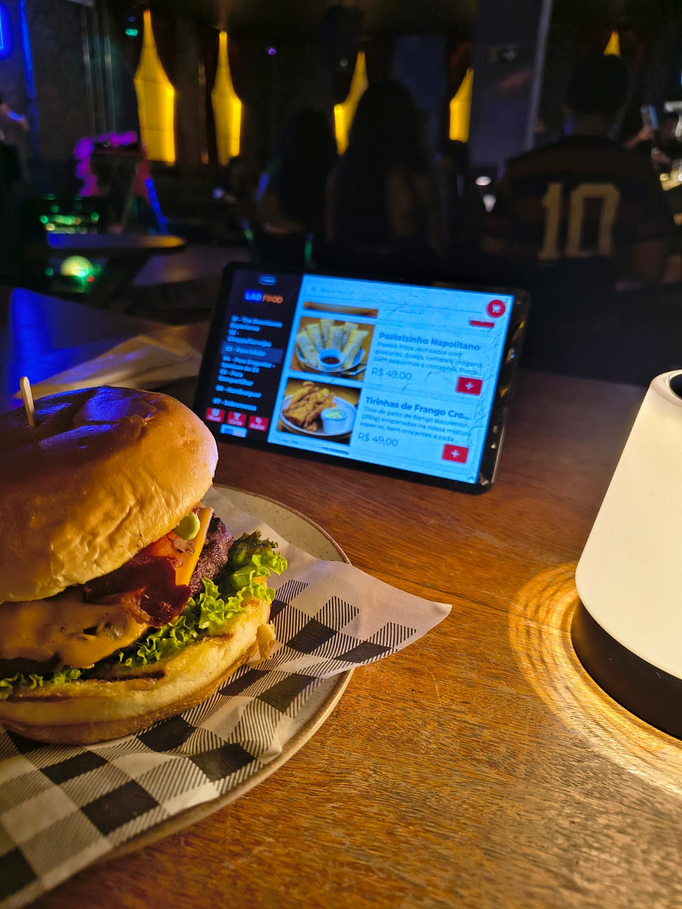
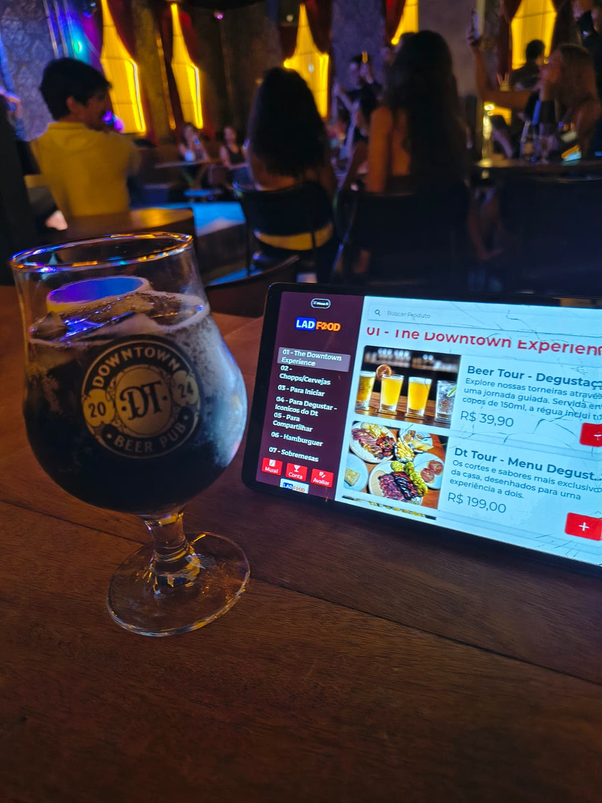

O cliente folheia fotos, descrição e preço que vêm direto do cadastro do LADFood, no tablet fixo da própria mesa. No fim, escaneia o QR Code da comanda física e o pedido cai direto no sistema — sem celular do cliente, sem chamar garçom para anotar.

📷 Foto real de implantação num bar parceiro
Na prática
Vídeo real gravado durante o uso no salão — sem edição, sem encenação.
Vídeo real de uma implantação num bar parceiro: cliente folheia o cardápio, escaneia o QR da própria comanda e o pedido cai na hora.
Como funciona
O tablet é do estabelecimento, fica fixo na mesa e funciona do mesmo jeito para qualquer cliente — com ou sem celular, bateria ou internet própria.
Categorias com fotos, descrição e preço aparecem no tablet fixo, vindas direto do cadastro do LADFood — o mesmo do PDV e do totem.
No fim da escolha, aponta a câmera do próprio tablet para o QR Code impresso na comanda física da mesa, vinculando o pedido a ela.
Sem esperar o garçom anotar: o pedido entra na comanda dentro do LadFood na hora, pronto para produção e fechamento de conta.
Funcionalidades
Fotos, descrição e preço vêm do mesmo cadastro do LADFood usado no PDV, no totem e no cardápio QR — atualizou uma vez, atualizou em todos.
O tablet lê o QR Code impresso na comanda física da mesa e vincula o pedido a ela na hora, sem precisar digitar número de mesa.
Pesquisa de satisfação integrada ao app: o cliente avalia o atendimento direto na mesa, sem abordagem constrangedora do garçom.
O cliente confere o valor da conta na hora, direto no tablet, sem esperar o garçom trazer a máquina até a mesa.
Menu lateral separado por seção — bebidas, entradas, pratos, sobremesas — fácil de navegar mesmo com um cardápio grande.
Aparelho fixo na mesa, pensado para uso contínuo durante o serviço — não depende de bateria nem de aparelho do cliente.
Caso real

Num bar parceiro, o tablet ficou na mesa ao lado do chope e do hambúrguer desde o primeiro dia de uso: o cliente folheou a carta de bebidas, escaneou o QR da própria comanda e o pedido caiu no sistema em segundos — sem trocar uma palavra com o garçom.
Cliente real LAD Sistemas
LADFood Menu ou Cardápio Mesa?
Os dois são integrados ao LADFood — o que muda é de quem é o aparelho e se ele depende do cliente ter celular, bateria e internet.
| Produto | Onde o cliente está | Aparelho | O pedido vai para |
|---|---|---|---|
| LADFood Menu | No salão, na mesa | Celular do próprio cliente (QR Code) | Comanda da mesa, com token validado |
| LAD Cardápio Mesa (este) | No salão, na mesa | Tablet fixo do estabelecimento, sem depender do aparelho do cliente | Comanda física da mesa, lida por QR Code direto no tablet |
Dúvidas frequentes
Um por mesa (ou por conjunto de mesas, se preferir concentrar). O implantador da LAD ajuda a dimensionar o número certo conforme o tamanho do salão.
Sim — essa é a diferença deste produto. O tablet é do estabelecimento, fica fixo na mesa e funciona do mesmo jeito para qualquer cliente, com ou sem celular, bateria ou internet própria.
O LADFood Menu abre no celular do próprio cliente. O Cardápio Mesa roda num tablet fixo do estabelecimento, sempre disponível na mesa, sem depender do aparelho ou da internet de quem senta ali.
Sim, wifi estável no salão para o tablet conversar com o LadFood. Fora isso é só fixar o suporte na mesa, ligar o app e o cardápio já carrega do seu cadastro.
Cai. Ao escanear o QR da comanda, o pedido é lançado na mesma comanda dentro do LadFood, pronto para a cozinha e para o fechamento da conta — sem reentrada manual em outro sistema.
Baixe o app na Play Store ou fale com o time comercial da LAD para dimensionar os tablets do seu salão.
Baixar na Play StorePrefere conversar antes? Fale com o comercial LAD →